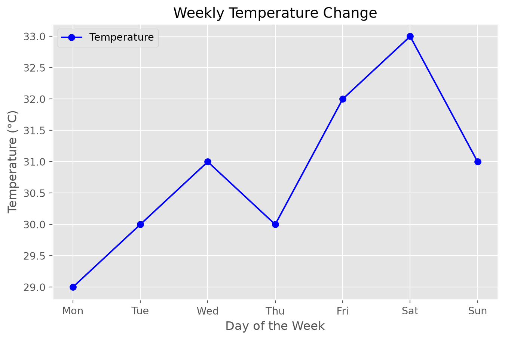
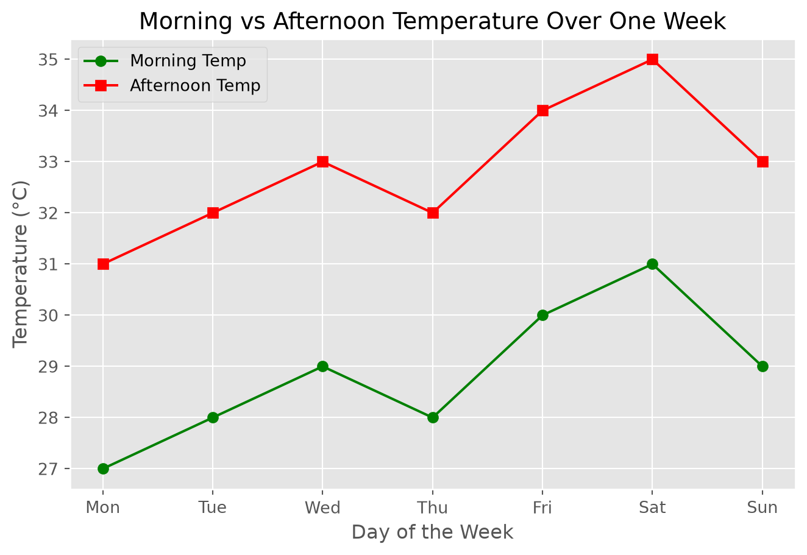

import matplotlib.pyplot as plt
plt.style.use('ggplot') # built-in style, no extra package requiredFoundations of Matplotlib: Core Plotting
1. Introduction to Data Visualization
Data visualization is the process of representing data using graphs, charts, or diagrams.
It helps us understand data clearly by showing patterns, trends, changes, and comparisons.
Example:
Daily temperatures for a week: [29, 30, 31, 30, 32, 33, 31]
Hard to see trend as numbers → Graph makes it clear
2. What is Matplotlib?
Matplotlib is a Python library used to create visualizations like line charts, bar charts, scatter plots, histograms, and pie charts.
It is widely used in data science, statistics, research, and reports.
3. Create Dataset
# Days of the week
days = ["Mon","Tue","Wed","Thu","Fri","Sat","Sun"]
# Temperature values
temperature = [29,30,31,30,32,33,31]
days, temperature(['Mon', 'Tue', 'Wed', 'Thu', 'Fri', 'Sat', 'Sun'],
[29, 30, 31, 30, 32, 33, 31])4. Single Line Plot Example
plt.figure(figsize=(8,5)) # Canvas
# Plot data with aesthetics
plt.plot(days, temperature, color='blue', linestyle='-', marker='o', label='Temperature')
# Decorations
plt.title("Weekly Temperature Change")
plt.xlabel("Day of the Week")
plt.ylabel("Temperature (°C)")
plt.legend()
plt.grid(True)
plt.show()
5. Comparing Two Lines Example
morning_temp = [27,28,29,28,30,31,29]
afternoon_temp = [31,32,33,32,34,35,33]
plt.figure(figsize=(8,5)) # Canvas
# Morning temperature line
plt.plot(days, morning_temp, label="Morning Temp", color='green', marker='o')
# Afternoon temperature line
plt.plot(days, afternoon_temp, label="Afternoon Temp", color='red', marker='s')
# Decorations
plt.title("Morning vs Afternoon Temperature Over One Week")
plt.xlabel("Day of the Week")
plt.ylabel("Temperature (°C)")
plt.legend()
plt.grid(True)
plt.show()
6. Complete Example: Single Line Plot (Ready for Teaching)
plt.figure(figsize=(8,5)) # Canvas
plt.plot(days, temperature, label="Temperature", color='blue', marker='o') # Data + Aesthetics
plt.title("Weekly Temperature Change")
plt.xlabel("Day of the Week")
plt.ylabel("Temperature (°C)")
plt.legend()
plt.grid(True)
plt.show()